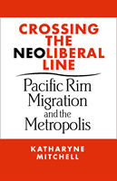

How wealthy transnationals expose the hidden rules of everyday life
How wealthy transnationals expose the hidden rules of everyday life


 How wealthy transnationals expose the hidden rules of everyday life
How wealthy transnationals expose the hidden rules of everyday life

|  |
Crossing the Neoliberal LinePacific Rim Migration and the MetropolisKatharyne Mitchellpaper EAN: 978-1-59213-084-9 (ISBN: 1-59213-084-4) |
"Crossing the Neoliberal Line is a beautifully written and analytically rich book. Katharyne Mitchell's innovative spatial ethnography sheds important light on the politics of racial formation, neighborhood transformation, and multiculturalism in Vancouver. She shows how the networks and practices of middle-class and wealthy Chinese transnational migrants to this Pacific Rim metropolis have interrupted and complicated constructions of 'home,' 'citizenship,' and 'cultural difference.' Her book is a pleasure to read and makes an important contribution to urban and transnational studies."
—Michael Peter Smith, University of California, Davis, and author of Transnational Urbanism: Locating Globalization
As wealthy immigrants from Hong Kong began to settle in Vancouver, British Columbia, their presence undid a longstanding liberal consensus that defined politics and spatial inequality there. Riding the currents of a neoliberal wave, these immigrants became the center of vigorous public controversies around planning, home building, multiculturalism, and the future of Vancouver. Because of their class status and their financial capacity to remake space in their own ways, they became the key to a reshaping of Vancouver through struggles that are necessarily both global and local in context, involving global-real estate enterprises, the Canadian state, city residents, and others.
In her examination of the story of the integration of transnational migrants from Hong Kong, Katharyne Mitchell draws out the myriad ways in which liberalism is profoundly spatial, varying greatly depending on the geographical context. In doing so, Mitchell shows why understanding the historically and geographically contingent nature of liberal thought and practice is crucial, particularly as we strive to understand the ongoing societies' transition to neoliberalism.
Excerpt available at www.temple.edu/tempress
"A vivid account of the rise of a Pacific Rim city, Katharyne Mitchell's ethnography of transnational migration and urban change in Vancouver demonstrates how both social liberalism and neoliberalism are constituted in 'actually existing' spaces by real people. Theoretically rigorous and empirically rich, scholars of neoliberalism, globalization, transnationalism, and multiculturalism should all read this fascinating book."
—Wendy Larner, Sociology, University of Auckland
"In this lucid and compelling 'spatial ethnography,' Katharyne Mitchell wrestles the ideology of neoliberal globalism to earth. In the process, this innovative and theoretically rich book takes the debate on neoliberalism to a new place, exposing the subtle intersections between social liberalism and market fundamentalism in the real, lived spaces of the city."
—Jamie Peck, Professor of Geography and Sociology, University of Wisconsin-Madison
"[A]nalytically rich, empirically detailed and ethnographically grounded.... Crossing the Neo-Liberal Line is a major accomplishment: the text is accessible, theoretically sophisticated, well documented, and grounded in an in-depth and complex understanding of social change and urban politics in Vancouver.... Katharyne Mitchell is to be commended for writing an insightful book that deserves to be widely read."
—The Canadian Journal of Sociology Online
"In this elegantly written study.... Mitchell does a wonderful job of challenging the reader to question what he or she really believes in terms of social liberalism, neoliberalism, multiculturalism, and many of the other 'isms' prevalent in contemporary social science literature... One walks away from this book with a new appreciation for how there are no easy assessments of the costs and benefits of, and implications of globalization for, the urban milieu."
—Environment and Planning A
"A notable achievement of Katharyne Mitchell's book is to employ a sophisticated political economy while simultaneously avoiding many of the dangers of abstraction, for her grounded study of immigrant and capital flows between Hong Kong and Vancouver is attentive to the multi-layering of place and to multiple causes.... Mitchell provides a compelling story...the empirical account is interwoven with illuminating theoretical materials, placing local events into broader conceptual territory. The interpretation that emerges is bold and frequently insightful...This is an impressive book that invites debate... It will generate stimulating seminar discussion and amply deserves a broad reading."
—Ethnic and Racial Studies
"The chapters of the book build skillfully on each other to create a coherently structured and generally well-argued thesis.... [Crossing the Neoliberal Line is] outstanding in its attempt to inform, through grounded empirical research, some of the key social and political issues facing Western liberal democracies over the past two decades. It is essential reading for all with a broad interest in contemporary immigration in the West as well as those with a more particular interest in the urban consequences of transnational, transpacific forms of mobility."
—The Annals of the Association of American Geographers
"[A] fascinating account ... What is particularly interesting about Mitchell's work is her nuanced analysis of the crosscutting of class and 'racial' alliances that emerged... [T]his is an excellent read that historians, sociologists and geographers will find very useful."
—The Canadian Historical Review
"This is a book you will want to read cover to cover—and indeed we did. While we were already familiar with some of the empirical cases from previous articles, it held our attention with its theoretical sophistication and engaging and lucid writing style....Mitchell is an exceptionally gifted scholar who, as this book shows, brings considerable theoretical insights to questions of how space is implicated in contemporary processes of neoliberalization, globalization, and transformations of narratives of nation and citizenship. She shows an excellent understanding of the coimplication of these processes, a deep empirical knowledge of shifts in these processes, and a talent for writing a compelling and engaging narrative that is rare among geographers."
—Environment and Planning D: Society and Space
Acknowledgments
1. Introduction: Neo/Liberal Disjunctures
2. Vancouver Goes Global
3. The Spatial Logic and Limits of Multiculturalism
4. Disturbing the Liberal Territory of Land Governance
5. Domesticity, Race, and Uncanny Homes
6. Conclusion: The Urban Spatial Politics of Liberal Formations
Notes
Bibliography
Index
 | Katharyne Mitchell is Professor of Geography and the Simpson Professor of the Public Humanities at the University of Washington. |
Asian American Studies
Anthropology
Place, Culture, and Politics, edited by Neil Smith.
Place, Culture, and Politics is edited by Neil Smith, Graduate Center, City University of New York. Many of the most pressing political issues today are widely understood to occupy the nexus between place, culture and politics. Books in this series will make clear the pivotal role of space and place in questions of politics and culture. The series is interdisciplinary, ranging freely between the social sciences and humanities and, to a lesser extent, the physical and life sciences. The primary aim of these texts will be to influence public opinion more than to increase the purely academic stock of knowledge. Books will be explicitly political; they will have a point of view, multiple points of view, and will engage current events and ideas.
© 2015 Temple University. All Rights Reserved. This page: http://www.temple.edu/tempress/titles/1736_reg.html.